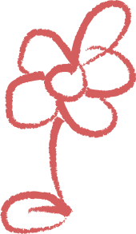
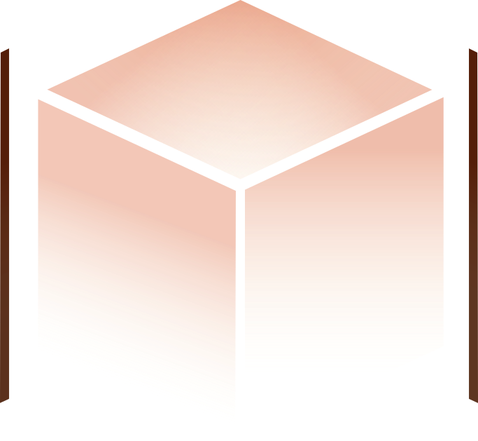

Turn the lights on



Design your own lamp shade
Antidote
I recently graduated and got my first big girl apartment! And like every new apartment owner, immediately became obsessed with furniture shopping. Lamps especially, since my place has zero overhead lighting. That obsession sent me down the rabbit hole that is paper lamps, and I landed on the side of the internet where people make their own and collage them by hand. Now, I don't have the skills to make a lamp from scratch but I do have the skills to bring it online. So this project is inspired by that.
Make it yours
Draw on the left or right panel (it'll replace the flower). Leave it blank and it stays plain and lit.